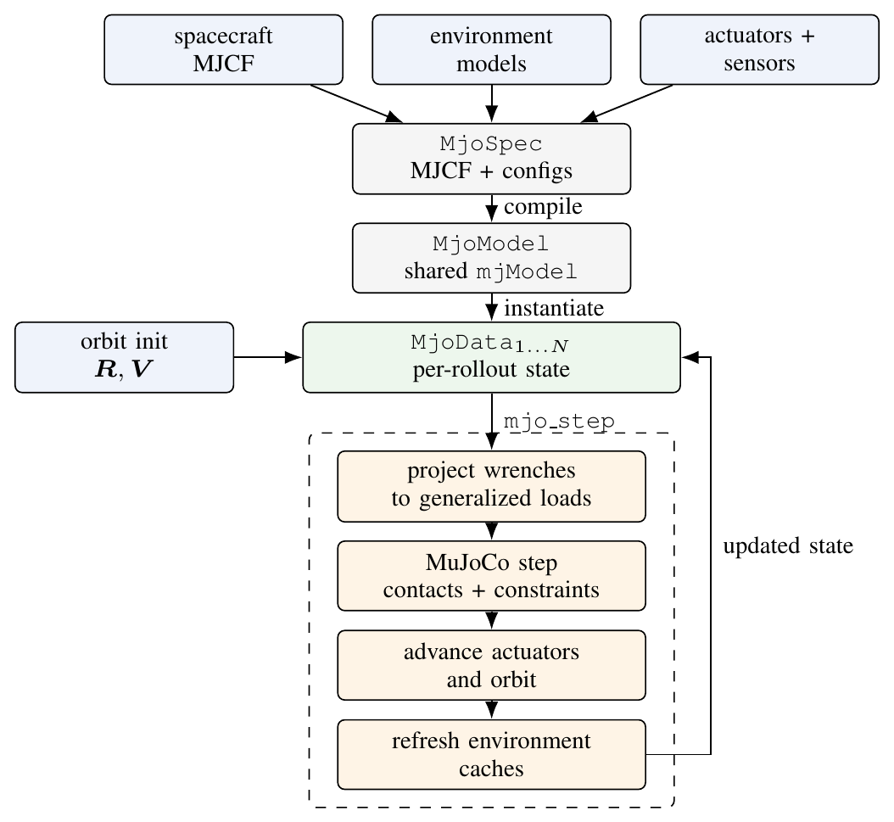
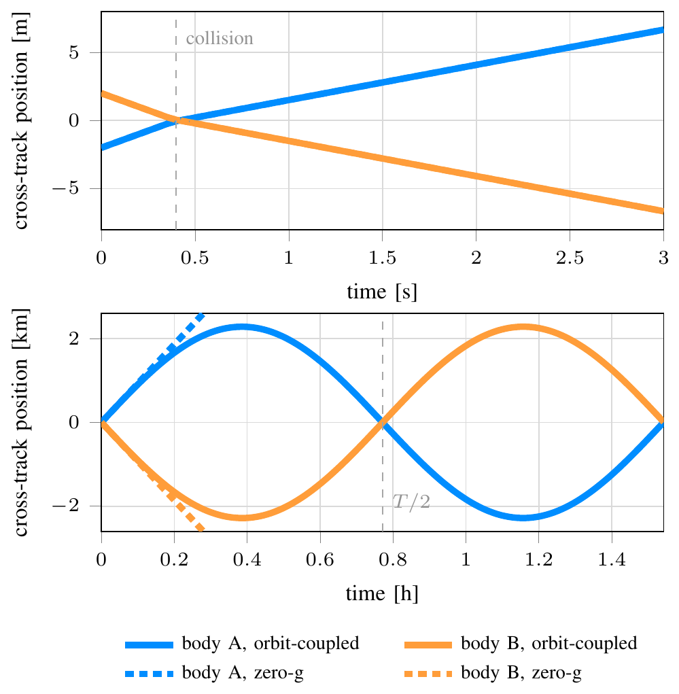
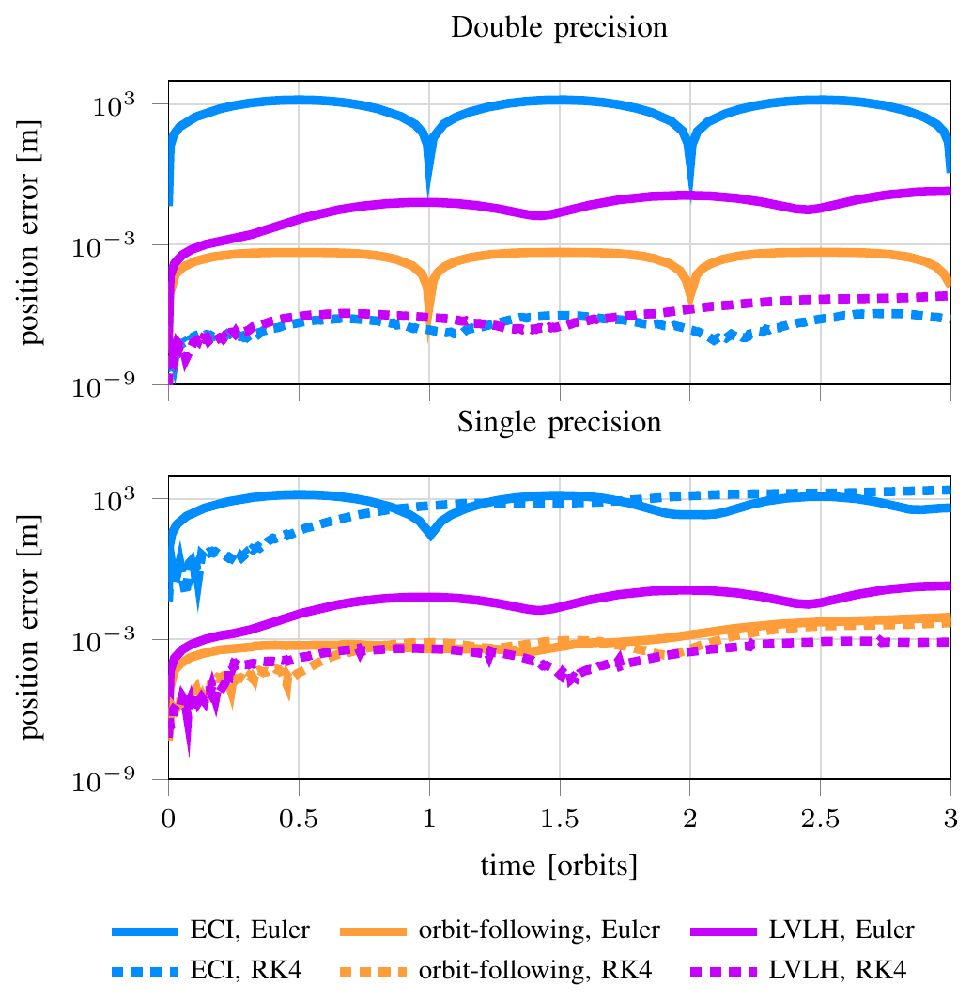

This paper presents a general framework for simulating multi-body space robots with contact. Motivated by the increasing demand for on-orbit manipulation, we aim to bring efficient, large-scale robot simulation to space applications. First, we empirically analyze common design choices and their trade-offs when coupling orbit propagation with existing robotics simulation frameworks. Next, we present mjorbit, a general, flexible, and performant simulation framework based on the MuJoCo simulation engine commonly used in robotics, while modeling key spacecraft dynamics, actuators, and sensors. We provide two implementations of mjorbit: a low-latency C++ implementation on the CPU, and a high-throughput GPU-accelerated implementation. Both of these variants can be accessed through a simple Python API. We demonstrate mjorbit by solving several realistic space manipulation case studies with both real-time model-predictive control and reinforcement learning. Open-source code and examples are available on GitHub.
mjorbit
extends MuJoCo with orbital state, spacecraft actuators and sensors, and passive environment forces and
torques, while keeping MuJoCo's articulated-body dynamics, contact solver, and MJCF modeling workflow.
The reference orbit (R, V) is propagated in an Earth-centered inertial frame, while MuJoCo
runs in an orbit-following world frame whose origin tracks the reference orbit and whose axes
stay parallel to ECI. This single design choice — the orbit-following frame combined with a
cancellation-resistant (Encke) formulation of differential gravity — is what keeps long-horizon
physics accurate even in single precision on the GPU.
Each mjo_step projects per-body wrenches (differential gravity, J2, atmospheric
drag, solar radiation pressure, gravity-gradient, magnetic, and actuator torques) into MuJoCo's
generalized forces, lets MuJoCo solve the constrained multibody dynamics, then advances the actuator and
orbit states and refreshes the environment caches. The CPU backend runs this as a MuJoCo engine plugin
for low-latency control; the GPU backend (mjorbit-warp)
realizes the identical pipeline as fused MJWarp kernels for massively parallel rollouts. Both share one
Python API.

Software pipeline, shared by the CPU and GPU backends. Spacecraft MJCF and actuator, sensor, and environment configs are composed into an editable MjoSpec, compiled into a shared MjoModel, and instantiated as one or more independent MjoData states, each seeded with a reference-orbit state. Each mjo_step projects body wrenches into MuJoCo's generalized forces, advances the contact dynamics, propagates the actuator and orbit states, and refreshes the environment caches for the next step.
Minimal example
import numpy as np
from mjorbit import MjoModel, OrbitInit, mjo_step
from mjorbit.constants import GM_EARTH, R_EARTH
from mjorbit.testdata import FREE_BODY_XML
# Circular LEO orbit at 400 km altitude.
radius_km = R_EARTH + 400.0
speed_km_s = np.sqrt(GM_EARTH / radius_km)
orbit = OrbitInit(
R_eci=[radius_km, 0.0, 0.0],
V_eci=[0.0, speed_km_s, 0.0],
)
# Compile model from MJCF; allocate per-rollout data.
model = MjoModel.from_xml_path(FREE_BODY_XML, mj_timestep=0.01)
data = model.make_data(orbit=orbit)
# Step the coupled orbit and rigid-body dynamics.
mjo_step(model, data)
print(data.time, data.qpos[:3])
We demonstrate mjorbit on four on-orbit scenarios that exercise both the low-latency CPU backend for
real-time control and the GPU backend for large-scale reinforcement learning. Interactive browser demos
ship with the code (pixi run viewer); rendered clips of each scenario are shown below (click any to expand).
(a) Multibody Attitude Control · CPU
A free-floating bus carries two articulated arms and has no attitude actuators; an MPPI planner moves the eight arm joints to exchange angular momentum and slew the bus through a large 60° reorientation, then keeps replanning to hold attitude against orbital disturbances — reorienting purely by reaction (a nonholonomic “falling-cat” maneuver).
(b) Autonomous Docking · CPU / MPPI
A chaser spacecraft autonomously docks with a large target station. A sampling-based MPC (MPPI) commands body thrusters and reaction wheels over a receding horizon to drive the relative position and attitude of the two docking ports to zero before latching — running in closed loop at control rates.
(c) Grasping under Gravity Gradient · CPU / MPPI
A free-floating servicer with a claw-like gripper on a two-link boom captures a nearby drifting payload, which then stabilizes the combined stack about the local vertical. With no dedicated attitude actuators, different masses and arm lengths can exploit the passive gravity-gradient torque and oscillate around the equilibrium point.
(d) Reinforcement Learning for Free-Flyer Capture · GPU / PPO
A policy trained with PPO on the GPU backend across 1,024 parallel worlds controls an Astrobee-style free-flyer that detumbles from an initial spin, flies to a free-floating cargo module drifting 1–2 m ahead, and grasps its handle bar with a parallel-jaw gripper, then station-keeps while holding it. Frictional contact between the gripper and the cargo bar is the only coupling between the two free bodies (no weld) — the arm, reaction-wheel, thruster, and binary-grip commands are learned end to end.
A common shortcut for space robotics is to simply disable gravity in an off-the-shelf rigid-body engine. This is fine over seconds, but over an orbit the missing differential gravity changes the answer qualitatively. We also study how the choice of multibody world frame and integrator interacts with floating-point precision — the regime that matters for single-precision GPU simulation.

Orbit coupling matters over long horizons. Cross-track position of two free-floating boxes after impact, orbit-coupled (solid) vs. a zero-gravity baseline (dashed). Top: across the contact event the two agree. Bottom: over one orbit, the orbit-coupled bodies follow a bounded oscillation and recross at T/2, while the zero-g simulation drifts without bound.

Frame choice + precision. Position error of a single spacecraft under three frames (ECI, orbit-following, LVLH) and two integrators (symplectic Euler, RK4). In double precision RK4 is sub-millimeter in any frame; in single precision only local frames stay accurate, and the orbit-following frame reaches millimeter accuracy with just a first-order symplectic integrator.
On a standard MuJoCo humanoid in microgravity with self-contact and 16 drag/SRP surfaces enabled, mjorbit adds only a 20–30% runtime overhead over the corresponding gravity-only MuJoCo baseline for full orbital propagation and environmental wrenches — modest given the added differential gravity, per-body environmental forces, and reference-orbit propagation.
at 8192 worlds (RTX 3080)
over a 10 s (2000-step) horizon (i7-12700K)
vs. vanilla MuJoCo
The low-latency CPU path serves real-time control; the massively parallel GPU path supports reinforcement learning and batch evaluation — reaching roughly 64% (CPU peak) to 87% (GPU peak) of the corresponding vanilla-MuJoCo throughput.
| Simulator | Orbit dynamics |
Env. perturb. |
CPU parallel |
GPU parallel |
Multibody contact |
|---|---|---|---|---|---|
| Generalized ADCS | ✓ | ✓ | ✗ | ✗ | ✗ |
| Basilisk | ✓ | ✓ | ✓ | ✗ | ✓ |
| Dshell-DARTS | ✓ | ✓ | ✗ | ✗ | ✓ |
| SmallSatSim | ✗ | ✗ | ✓ | ✓ | ✓ |
| mjorbit (ours) | ✓ | ✓ | ✓ | ✓ | ✓ |
mjorbit is, to our knowledge, the first open-source space-robot simulator to combine orbital dynamics and environmental perturbations with high-throughput CPU- and GPU-parallel multibody contact behind a single robotics-style API.
If you use mjorbit in your research, please cite the paper:
@article{zhang2026mjorbit,
title = {mjorbit: A Simulation Framework for Space Robotics},
author = {Zhang, John Z. and Verhagen, Joris and Vega, Fausto
and McKeen, Patrick and Manchester, Zachary},
journal = {arXiv preprint arXiv:2609.08010},
year = {2026},
eprint = {2609.08010},
archivePrefix = {arXiv},
primaryClass = {cs.RO},
url = {https://arxiv.org/abs/2609.08010}
}